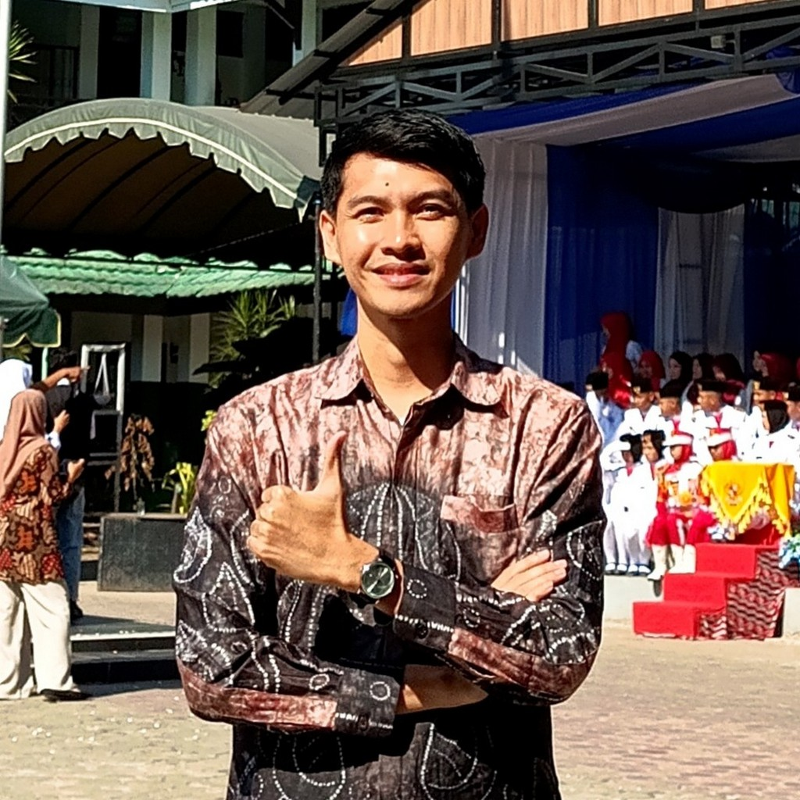

PPG Calon Guru 2026Akhmad Wahyu Redhani
NIM: 2530111713968 • Informatika
Menuntun Kodrat Anak Melalui Pembelajaran Informatika yang Berkesadaran, Bermakna, & Menggembirakan
Selamat datang di E-Portofolio Digital resmi saya. Website ini memuat seluruh bahan Seminar PPG, Lembar Kerja (LK 1 hingga LK 4), artefak refleksi 12 mata kuliah Semester 1 & Semester 2, serta Desain Karya Inovatif Informatika Learning Hub selama menempuh pendidikan profesi di Universitas Lambung Mangkurat (ULM) dan praktik pengalaman lapangan di SMKN 1 Banjarmasin.
Visi Pribadi Pendidikan Indonesia & Visi Sebagai Calon Guru
Apa visi saya untuk pendidikan di Indonesia?
"Visi pribadi saya untuk pendidikan di Indonesia adalah terwujudnya lingkungan belajar yang merata, ramah, dan peduli pada setiap anak. Saya memimpikan pendidikan di mana setiap anak dari berbagai pelosok mendapatkan kesempatan yang sama untuk belajar dan berkembang tanpa merasa dibeda-bedakan. Saya berharap sekolah tidak hanya sekadar tempat mengejar nilai rapor, tapi juga menjadi tempat anak-anak belajar peduli sesama, berpikir kritis, dan mengenali potensi dirinya sendiri agar mereka siap menghadapi kehidupan nyata di masyarakat."
Apa visi saya sebagai calon guru?
"Sebagai calon guru, visi saya adalah menjadi teman belajar sekaligus pembimbing yang sabar dan tulus bagi murid-murid saya. Saya tidak hanya ingin masuk kelas sekadar untuk menghabiskan materi buku, tapi saya ingin hadir untuk memahami karakter dan cara belajar mereka yang pasti berbeda-beda. Saya bervisi menjadi guru yang bisa menumbuhkan rasa percaya diri anak, dan selalu meyakinkan mereka bahwa setiap usaha dan keberanian mereka untuk mencoba adalah hal yang sangat berharga."
Apa yang Akan Saya Lakukan untuk Mencapai Visi Tersebut?
Tiga langkah nyata agar visi tersebut tidak berhenti sebagai pernyataan, tetapi benar-benar terwujud dalam praktik di kelas:
1. Terus belajar dan memperbaiki diri
Saya sadar bahwa untuk mendidik murid dengan baik, saya sendiri tidak boleh berhenti belajar. Saya akan membiasakan diri untuk merenung dan mengevaluasi cara mengajar saya setiap selesai kelas. Saya juga akan lebih rajin berdiskusi dengan sesama rekan guru, guru pamong, maupun dosen pembimbing untuk meminta saran dan masukan.
2. Menciptakan pelajaran yang menyenangkan dan dekat dengan keseharian anak
Saya sadar tiap anak punya minat yang berbeda. Oleh karena itu, saya akan merancang suasana kelas yang tidak membosankan dan materinya mudah dipahami karena terhubung dengan kehidupan mereka sehari-hari. Saya akan mengurangi kebiasaan ceramah terus-menerus dan lebih banyak mengajak murid untuk berdiskusi, bekerja sama, dan mencoba hal-hal baru secara langsung.
3. Membangun ruang kelas yang menghargai proses
Saya ingin kelas saya menjadi tempat yang aman bagi anak-anak untuk berani mencoba dan tidak takut dimarahi ketika berbuat salah saat belajar. Saya akan lebih banyak menghargai keringat, usaha, dan kegigihan mereka, bukan sekadar melihat hasil nilai akhirnya saja. Dengan begitu, saya harap mereka bisa tumbuh menjadi anak yang pantang menyerah.
Memantaskan Diri Membawa Perubahan Positif dari Ruang Kelas
"Mengikuti program Pendidikan Profesi Guru (PPG) ini bagi saya bukan sekadar formalitas untuk mencari sertifikat pendidik, melainkan langkah nyata untuk memantaskan diri. Semua niat dan rencana di atas adalah wujud kesungguhan saya untuk membawa perubahan yang positif. Saya yakin, perubahan besar untuk pendidikan Indonesia yang lebih baik selalu dimulai dari kasih sayang dan langkah-langkah kecil yang dilakukan seorang guru di dalam ruang kelasnya setiap hari."